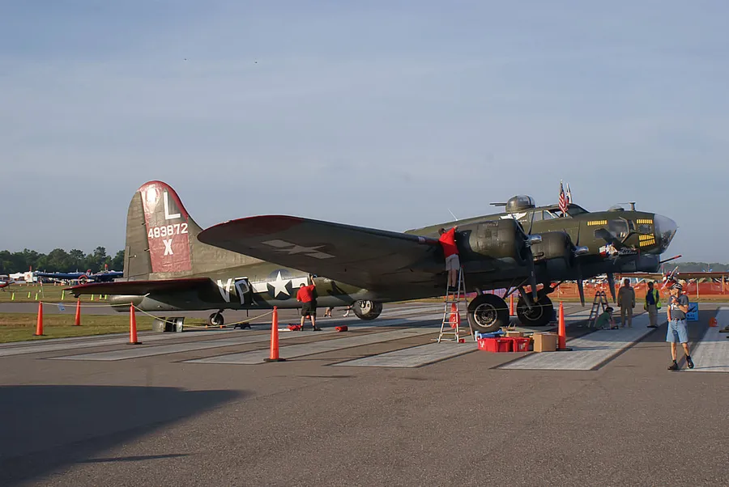

Boeing B-17G / Bell P-63F Midair Collision
Two Commemorative Air Force warbirds collided in flight at the Wings Over Dallas air show, Dallas, Texas November 12, 2022, afternoon · Wings Over Dallas air show, Dallas Executive Airport (KRBD), Dallas, TexasMid-air collision
No survivors, both aircraft
Case summary
During the “Warbirds” segment of the Commemorative Air Force's Wings Over Dallas air show, a Boeing B-17G Flying Fortress (“Texas Raiders”) and a Bell P-63F Kingcobra collided in flight while both groups were repositioning for the next pass in front of the crowd. The P-63F, descending in a left bank, struck the B-17G's left wing from behind and above; both airplanes broke apart and crashed, killing all five aboard the B-17G and the P-63F's pilot. NTSB's final report places the probable cause on the air boss's and air show organizer's reliance on real-time, verbal deconfliction instead of a prebriefed separation plan — compounded by the basic limits of see-and-avoid for two converging warbirds.

Commemorative Air Force, “Texas Raiders”
What happened
Source: NTSB Final Report (excerpt)As the bomber group and fighter formation repositioned for the next scheduled pass in front of the crowd, the air boss directed the fighter formation to pass the bomber group on their left side and cross in front of the Boeing B-17G to reach the 500-ft show line. The fighter lead and the second fighter misread the directive and leveled off early, at the 1,000-ft line instead — but the Bell P-63F, trailing the formation, kept closing on a flight path that converged with the B-17G. In a descending, left-banked turn, the P-63F struck the B-17G's left side near the trailing edge of the wing. Both airplanes broke apart in flight and crashed; there were no survivors among the six people aboard the two airplanes.
Why it happened
Source: NTSB Final Report"The National Transportation Safety Board determines that the probable cause of the accident was the air boss's and air show event organizer's lack of an adequate, prebriefed aircraft separation plan for the air show performance, relying instead on the air boss's real-time deconfliction directives and the see-and-avoid strategy for collision avoidance, which allowed for the loss of separation between the Boeing B-17G and the Bell P-63F airplanes. Also causal was the diminished ability of the accident pilots to see and avoid the other aircraft due to flight path geometry, out-the-window view obscuration by aircraft structures, attention demands associated with the air show performance, and the inherent limitations of human performance that can make it difficult to see another aircraft. Contributing to the accident were the lack of Federal Aviation Administration (FAA) guidance for air bosses and air show event organizers on developing plans and performing risk assessments that ensure the separation of aircraft that are not part of an approved maneuvers package and the lack of FAA requirements and guidance for recurrent evaluations of air bosses and direct surveillance of their performance."
- Lack of a prebriefed, administratively controlled aircraft separation plan for the performance — the air boss relied on improvised, real-time deconfliction instead
- Ambiguous air boss radio directives about which “show line” to fly, which led the fighter lead pilot to level off at the wrong line
- Inherent limits of see-and-avoid: flight path geometry, aircraft structure obscuring each pilot's view of the other airplane, and the high attention demands of flying the performance
- FAA and International Council of Air Shows (ICAS) guidance that did not adequately address deconfliction risk for air boss–directed performances involving multiple, dissimilar aircraft
- No FAA requirement for recurrent evaluation of air bosses, and no direct FAA surveillance of an air boss's live performance
- No documented, performance-specific safety risk assessment process to identify and mitigate the hazard before the show
- Commemorative Air Force's lack of a strong, clearly defined safety risk assessment plan, leaving air show production decisions susceptible to pressures unrelated to safety
- Elevated real-time workload on the air boss, who was simultaneously sequencing the performance, coordinating a revenue passenger ride, and coordinating a taxiing B-29
Photos & media (2)
Pre-accident reference photos of both aircraft, and an NTSB flight-path diagram (not photographs of the collision)As the bomber group and fighter formation repositioned for the next scheduled pass in front of the crowd, the air boss directed the fighter formation to pass the bomber group on their left side and cross in front of the Boeing B-17G to reach the 500-ft show line. The fighter lead and the second fighter misread the directive and leveled off early, at the 1,000-ft line instead — but the Bell P-63F, trailing the formation, kept closing on a flight path that converged with the B-17G. In a descending, left-banked turn, the P-63F struck the B-17G's left side near the trailing edge of the wing. Both airplanes broke apart in flight and crashed; there were no survivors among the six people aboard the two airplanes.
"The National Transportation Safety Board determines that the probable cause of the accident was the air boss's and air show event organizer's lack of an adequate, prebriefed aircraft separation plan for the air show performance, relying instead on the air boss's real-time deconfliction directives and the see-and-avoid strategy for collision avoidance, which allowed for the loss of separation between the Boeing B-17G and the Bell P-63F airplanes. Also causal was the diminished ability of the accident pilots to see and avoid the other aircraft due to flight path geometry, out-the-window view obscuration by aircraft structures, attention demands associated with the air show performance, and the inherent limitations of human performance that can make it difficult to see another aircraft. Contributing to the accident were the lack of Federal Aviation Administration (FAA) guidance for air bosses and air show event organizers on developing plans and performing risk assessments that ensure the separation of aircraft that are not part of an approved maneuvers package and the lack of FAA requirements and guidance for recurrent evaluations of air bosses and direct surveillance of their performance."
- Lack of a prebriefed, administratively controlled aircraft separation plan for the performance — the air boss relied on improvised, real-time deconfliction instead
- Ambiguous air boss radio directives about which “show line” to fly, which led the fighter lead pilot to level off at the wrong line
- Inherent limits of see-and-avoid: flight path geometry, aircraft structure obscuring each pilot's view of the other airplane, and the high attention demands of flying the performance
- FAA and International Council of Air Shows (ICAS) guidance that did not adequately address deconfliction risk for air boss–directed performances involving multiple, dissimilar aircraft
- No FAA requirement for recurrent evaluation of air bosses, and no direct FAA surveillance of an air boss's live performance
- No documented, performance-specific safety risk assessment process to identify and mitigate the hazard before the show
- Commemorative Air Force's lack of a strong, clearly defined safety risk assessment plan, leaving air show production decisions susceptible to pressures unrelated to safety
- Elevated real-time workload on the air boss, who was simultaneously sequencing the performance, coordinating a revenue passenger ride, and coordinating a taxiing B-29